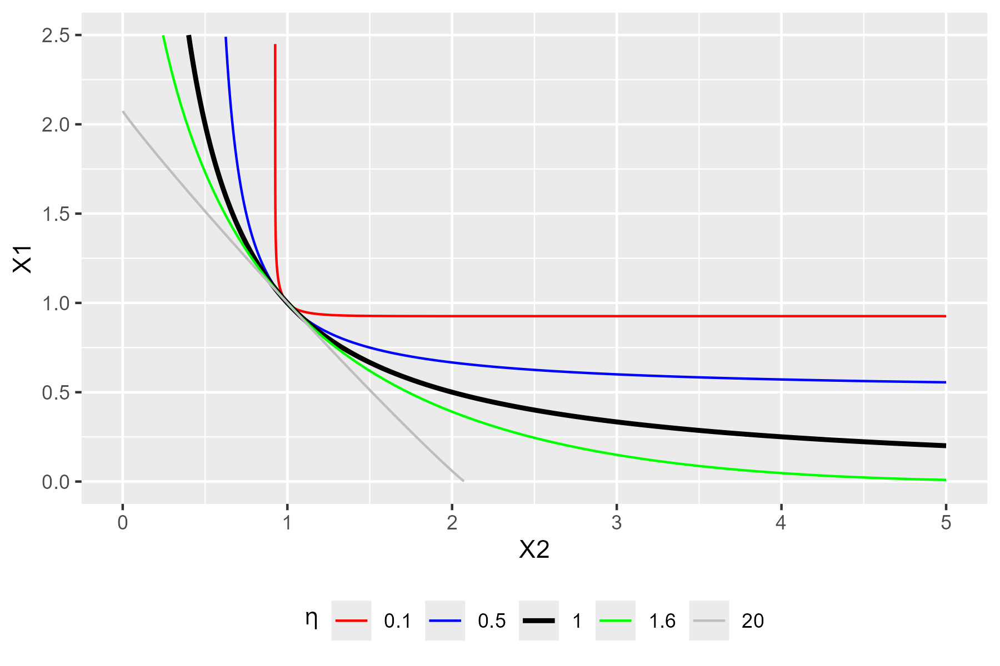

Universidad Iberoamericana Ciudad de México Taller: Modelos de Equilibrio General Neokeynesianos Dinámicos en R
Frédéric Reynès
Anissa Saumtally
mardi 5 novembre 2024
Welcome
What is a CGE model?
What is a CGE model?
Main usage of CGE models
Micro-economic foundations of CGE models
Macroeconomic closure
Neo-Keynesian closure: close economy
Open economy models
Multisector models
Definition
Computable: numerical simulation
General: take into account the interactions between markets.
Supply and demand influence each other
Equilibrium: Supply is equal to demand on all markets (good, production factors)
Structure of a CGE model (see next Figure):
Demand (Consumption, investment) defines the supply (production)
Supply defines in return the demand through the incomes generated by the production factors
CGE model
What does « general equilibrium » mean?
General Equilibrium relates to a state where supply is equal to demand in all markets
2 main approaches to insure this state:
Walrasian models
The equilibrium force is the price system
Perfect price flexibility insure the instantaneous equilibrium between supply and demand
When the supply of a commodity goes down, its price tends to go up, thereby stimulating additional supply and depressing demand, until supply and demand are equal again.
Static model
Neo-Keynesian models
Demand determines supply
Price and quantities are rigid and adjust slowly
Disequilibrium between notional (optimal) supply and the actual supply in the short run
Dynamic model: transition to the long run
A neo-keynesian CGE model
Slow adjustment of price and quantity
Adjustment costs
Empirically firms adjust their production to the demand rather than their price
Leads to situation of disequilibrium between the desired supply and demand
Prices are defined as a mark-up over the firm’s production costs
Production costs integrate intermediary consumption (material and energy), labor and capital costs
Wages are determined by a Wage Setting (WS) curve
Phillips curve: wages increase with inflation and decrease with unemployment
Wages do not adjust instantaneously the supply and demand for labor:
Permanent underemployment equilibrium possible
Theory of the NAIRU (Non Accelerating Inflation Rate of Unemployment) or Equilibrium rate of unemployment
The interest rate does not equilibrate instantaneously saving and investment:
It is defined by the Central Bank
« Taylor » reaction function: increases with inflation, decreases with unemployment
Main usage of CGE models
What is a CGE model?
Main usage of CGE models
Micro-economic foundations of CGE models
Macroeconomic closure
Neo-Keynesian closure: close economy
Open economy models
Multisector models
Macroeconomic versus multisector CGE models
CGE models are widely used in economic policy analysis. Two type of analyses:
Macroeconomic CGE models focus on understanding how an entire economy responds to shocks or policy changes
e.g. fiscal, monetary, trade, innovation policies
they aim to capture interdependencies between aggregate economic variables and key economic indicators
e.g. GDP, inflation, employment, and investment
Multisector CGE models break down the economy into several sectors to analyze the effects of policy changes or shocks on each sector individually
e.g. energy, agriculture, industry, services
main applications: trade policy, environmental regulation, energy policy, large-scale events like natural disasters
highlight how impacts may vary across sectors
allow for simulating sector specific policy
Examples of applications of our R package
Small size models
Small CGE model
Today’s course
Large size models
Econometric models (Opale and Mesange)
Quarterly models for short term forcast
Multi-sector models
e.g. open source ThreeME model
www.threeme.org
Overview of ThreeME
Multi-sector Macroeconomic Model for the Evaluation of Environmental and Energy policy.
Open source model
Download and documentation: https://www.threeme.org/
ThreeME is neo-Keynesian general equilibrium model.
Designed to study scenario involving transfers of activities from one sector to another
Overview of ThreeME: types of simulations of the economic and environmental impacts
Energy transition policies
Fiscal policies:
Carbon tax with or without redistribution of the tax revenue
Phasing out subsidies on (fossil fuel) energy
Bonus-malus for cars: subsidies on green cars financed by a tax on other cars
Change in the electricity production mix
Ex: more RES in the mix
Impact of green investment
In buildings, public transport, etc.
Impact of applying a new standard for buildings, or appliances
External shock
Increase in international oil/gas price
Micro-economic foundations of CGE models
What is a CGE model?
Main usage of CGE models
Micro-economic foundations of CGE models
Macroeconomic closure
Neo-Keynesian closure: close economy
Open economy models
Multisector models
Behavior equations versus identities
CGE models have behavioral and identity equations
Behavioral equations derive from microeconomic theory and economic rationality
Economic behavior of producers, consumers, and other agents in the model
Identity equations define a variable according to a definition as a mathematical function (sum, product, etc.) of other variables
Accountancy variables (e.g. GDP, price index), unemployment rate, etc.
Behavior equations
Prices
We assume oligopolistic competition à la Cournot where each producer defines its price in order to maximize its profit considering the price of the other producers as given:
The maximisation program is:
\[max_y Π(y) = p(y).y - c(y)\]
where \(y\) is the production or demand adressed to the compagny, \(\pi(y)\) is the profit of the compagny, \(p(y)\) its price and \(c(y)\) the production cost. We assume \(p′(y)\) < 0, \(c′(y)\) > 0 and \(c′′(y)\) > 0
The result of the program maximization defines the optimum price that is equal to a markup over the production costs:
\[p(y)= [1+ m^{up}].c'(y)\]
where the markup is: \[\begin{equation} m^{up}= 1/(\epsilon -1) \end{equation}\] and \(\epsilon\) the (absolute) price elasticity of demand
In perfect competition, markup is zero: \[\begin{equation} m^{up} = 0 \end{equation}\] so that the optimal price is equal to the marginal cost of production: \[\begin{equation} p(y)= c'(y) \end{equation}\]
Given that production costs equal total factor payments, the optimal price is therefore equal to the cost of capital and labor:
\[p(y).y= w.L+ p(\delta+r).K\]
Behavior equations
Households consumption
We assume that households supply labor and own the capital, for which they get their income (\(w.L + p.r.K\)) .
We assume that households wish to use a fixed share of their total income for consumption
\[CH = \left( 1 - \sigma \right) . \frac{\left( w . L + p . r . K \right)}{p}\]
Can be derive from alternative theoretical model of consumption.
For instance: let us assume that the consumer maximize its (CES) utility by allocating the income of a given period over several periods.
The maximization program is:
\[max_{c_i} U(c_1, c_2, ... c_n)=\sum_{i=1}^{n} (\phi_i.c_i^{\frac{\rho-1}{\rho}})^{\frac{\rho}{\rho-1}}\]\[\ s.t \ \sum_{i=1}^{n} p_i.c_i = R\] where \(\rho\) is the elasticity of substitution, \(c_i\) the consumption of good in period \(i\) and \(R\) total income.
The resolution of this program gives the relationship between households consumption and total income :
\[p_i.c_i= (\Phi_i)^{\rho}.(\frac{p_i}{P})^{1-\rho}.R\] where \((\Phi_i)^{\rho}.(\frac{p_i}{P})^{1-\rho}\) is the consumption share.
Considering only two periods: \(i=1\) (present) and \(i=2\) (future) and assuming a CES function with \(\rho=1\), we find that consumption is a constant share of income:
\[p_1.c_1 = \phi_1.R\] with \(\phi_1\) = (1-\(\sigma\)) and \(\sigma\) the propensity to save.
Behavior equations
Demand for production factors
The firm determines its demand for labor and capital by maximizing its profit, which is equivalent to minimizing its production cost taking into account the production function.
Assuming a CES production function, the constrained cost minimization program is:
\[min_{x_i} (\sum_{i=1}^{n} p_i.x_i)\]
\[\ s.t. \ Q= Q(x_i) = (\sum_{i=1}^{n} \Phi_i.x_i^{(\frac{\rho-1}{\rho})})^{(\frac{\rho}{\rho-1})}\] where \(\rho\) is the elasticity of substitution between inputs.
The resolution of the program derives demand for factors expressed as follows: Labor demand:
The Constant Elasticity of Substitution (CES) production function proposed by Arrow et al. (1961) offers flexibility in modeling substitutability between production factors
Cobb-Douglas function where the ES is unitary \(\eta = 1\).
Behavior equations
CES function for various elasticities of substitution

Code
library(ggplot2)# CES Function: Q^((eta-1)/eta) = phi1*X1^((eta-1)/eta) + phi2*X2^((eta-1)/eta)# Interpolation step (for ggplot)step <-1000# Inverse CES function: X1 = f(Q,X2)X1 <-function(X2, eta) {# Calibration of the parameters of the CES function Q <-1 phi1 <-0.5 phi2 <-0.5 ((Q^((eta-1)/eta) - phi2*X2^((eta-1)/eta))/phi1)^(eta/(eta-1)) }plot_CES_for_various_elasticity <-ggplot(data.frame(x =c(0,5)), aes(x=x)) +stat_function(fun = X1, args =list(eta =0.1) , aes(colour ="0.1"), n = step*1000) +stat_function(fun = X1, args =list(eta =0.5) , aes(colour ="0.5"), n = step) +stat_function(fun = X1, args =list(eta =0.999), aes(colour ="1" ), n = step, lwd =1) +stat_function(fun = X1, args =list(eta =1.6) , aes(colour ="1.6" ), n = step) +stat_function(fun = X1, args =list(eta =20) , aes(colour ="20" ), n = step) +scale_colour_manual(name =expression(eta), values =c("red", "blue", "black", "green", "grey")) +ylim(0,2.5) +theme(legend.position ="bottom") +labs(y ="X1", x ="X2")plot_CES_for_various_elasticityggsave("plot_CES_for_various_elasticity.png", plot = plot_CES_for_various_elasticity, width =6, height =4, dpi =300)
Identities and defnitions
Production
\[Y = CH + I + G\]
Market equilibrium condition between supply and demand
Accountancy equation that states that everything that is being produced (total supply) is « consumed », either as household’s consumption, investment or government spending (total demand)
Capital accumulation
Given an initial capital stock (at \(t-1\)), the change in capital stock defines the capital stock in \(t\):
Increases with the investment made in the previous period (\(I_{t-1}\))
Decreases with the depreciation of the capital stock (\(\delta.K_{t-1}\))
Cost of capital
We assume that the cost of capital is defined as the user cost of capital (or real rental price of capital services or the costs of holding capital) :
\[c^{K} = p(\delta + r)\]
where \(\delta\) is the depreciation rate of capital, \(r\) the interest rate and \(p\) the price of the investment.
This equation may have several interpretations:
It reflects the opportunity cost of holding capital, that is the cost of not been able to invest an existing financial wealth into another asset
It assumes that capital is financed through bank credit and that the reimbursement of the debt corresponds to the depreciation of capital
Macroeconomic closure
What is a CGE model?
Main usage of CGE models
Micro-economic foundations of CGE models
Macroeconomic closure
Neo-Keynesian closure: close economy
Open economy models
Multisector models
Some definitions
Endogenous variable: defined inside the model, as a result of the model simulation
One equation for each endogenous variable
Eg. production, consumption, prices, wages, etc.
Exogenous variable: defined outside the model
No equation in the model defining this variable: hypothesis of the model
Eg. population, price of imports (for a one country model)
Parameter: from a mathematical point of view, an exogenous variable that is generally constant
Eg. elasticities (substitution, indexation, etc.), depreciation rate, tax rate, etc.
Representative agent: an average relevant economic agent that follows an optimizing/rational economic behaviour
Households, producers, government
Optimize an objective: e.g. maximization of profit/utility/social welfare, minimization of cost
Macroeconomic closure
A model is a way of explaining endogenous variables as function of exogenous variables.
Making a choice of what is to be determined within the model (endogenous variables) and what is to be considered external to the model (exogenous variables) is called the model closure.
Why does the choice of the model closure matter ?
It may define the direction of causality (which variables determine the others)
It may have important implications on the properties and results of the model
Simulation experiment: What is the impact of an increase in public spending (multiplier of public expenditures) on the endogenous variables of the model depending on the choice of the closure ?
We compare the results for two contrasting model closures:
The Walrasian model
The Keynesian model
Walrasian versus Keynesian models
Common features for both models:
General equilibrium: which means that supply equals demand in all markets.
In both frameworks, the models consist of equations that solve for the endogenous variables, given the exogenous variables and parameters. A change in one or more exogenous variable or parameter will lead to adjustments in the endogenous variables so to solve the system of equations again. These solved values of all endogenous variables, constitute the outcome of the model .
Main difference between both models:
The choice of endogenous variables. In the Walrasian framework some variables adjust while there are considered fixed in the Keynesian framework and vice-versa.
Note: Our definitions of the Walrasian and Keynesian closures may differ from those found in the literature inspired by the seminal work of Sen (1963). Contrary to this literature that consider a static case, we propose simulations based on a dynamic model including an equation for capital accumulation and where investment is endogenous in both the Walrasian and the Keynesian closure.
The Walrasian model
The model is based on a set of 7 equations with 7 endogenous variables:
Investment \[I = Y - CH - G\]
Production \[Y . p = w . L + p . \left( \delta + r \right) . K\]
Households’consumption \[CH = \left( 1 - \sigma \right) . \frac{\left( w . L + p . r . K \right)}{p}\]
The price equation defines the price as numéraire (equal to 1). The price can therefore be seen as an exogenous variable. The model could be written as a set of 6 equations with 6 endogenous variables.
Production is determined by the « price equation » because the price is set to 1 (numéraire) and is therefore an exogenous variable.
Investment is determined endogenously as the difference between production and (private and public) consumption
Labor is exogenous so that the « labor demand equation » does not determine labor but the wage
The equation that determines capital is the one of capital accumulation, so the « capital demand equation » derived from profit maximization does not determine capital but the interest rate
In the Walrasian framework, savings define investment, wages and interest rate adjust to clear the capital and labor markets
Note: we consider a steady state economy (with growth rate = 0%)
The Keynesian model
The model is based on a set of 6 equations with 6 endogenous variables:
Production
\[Y = CH + I + G\]
Price
\[p . Y = w . L + p . \left( \delta + r \right) . K^{n}\]
Households consumption
\[CH = \left( 1 - \sigma \right) . \frac{\left( w . L + p . r . K \right)}{p}\]
In the Keynesian closure, the wage and the interest rate are exogenous whereas labor and capital are endogenous
To represent the slow adjustment of price and quantities, it is convenient to distinguish between notional and effective level
The notional levels are mentioned with the underscore (superscript) « n » in the model They refer to the level of price, consumption, labor and capital the producer and the consumer would like to reach immediately if there were no adjustment constraint
Introduction to a new macroeconomic model: the Neo-Keynesian model
Walrasian model
Neo-Keynesian model
Prices and quantities adjust instantaneously
Slow adjustment of prices and quantities
Perfect flexibility of price and quantities
Rigidity of price and quantities
Law of Say: production creates its own demand
Demand determines supply, supply affects demand through different mechanisms
Supply is at full capacity
The actual stock of capital may differ from the optimal one
Increasing production requires to increase the stock of capital
No full utilization of capacity (around 80%). Possibility to increase Y without increasing the stock of capital
After a shock, a new equilibrium is found instantaneously
After a shock, time to adjust to the new equilibrium levels
Two versions of the Neo-Keynesian model
We consider two versions of the model:
Close economy : The model is found in src/model/training/03.1-eq_neokeynes.mdl
Open economy : The model is found in src/model/training/03.1-eq_neokeynes_exception_open.mdl
There are only small differences between both models, to which we will come back later. But first, let’s start by exploring the set of equations in the model considering a close economy.
Models and corresponding documentation
Model
Description
Corresponding chapter in the manual
1.1
Model with 1 equation 1 endogenous variable
-
1.2
Model with 3 equations 3 endogenous variables
-
2.0
Main equations of CGE models (not solvable)
Chapter 1: Introduction to CGE models
2.1
Walrasian closure
Chapter 2: A simple Walras CGE model
2.2
Keynesian closure
Chapter 3: A simple Keynesian CGE model
3.1
Neo-Keynesian closure (close economy)
Chapter 4: A simple Neo-Keynesian model
3.2
Neo-Keynesian closure (open economy)
Chapter 4: A simple Neo-Keynesian model
-
ThreeME c4xs4
Upcoming
-
ThreeME c8xs8
Upcoming
Neo-Keynesian closure: close economy
What is a CGE model?
Main usage of CGE models
Micro-economic foundations of CGE models
Macroeconomic closure
Neo-Keynesian closure: close economy
Open economy models
Multisector models
Introduction
The close economy model consists of a set of equations regarding:
Producers
Consumers
Government and central bank
Labor market
Adjustments
Producers: main equations
Production
\[\begin{equation}
Y = CH + I + G
\end{equation}\]
Notional unit cost production cost\[\begin{equation}
c^{Y} . Y = w . L^{n} + c^{K} . K^{n}
\end{equation}\]
Capital cost\[\begin{equation}
c^{K} . K = p^{K}_{t-1} \; K_{t-1} \; \left( \delta + r^{K}_{t-1} \right)
\end{equation}\]
Average price of the accumulated capital stock\[\begin{equation}
p^{K} . K = p^{K}_{t-1} \; K_{t-1} \; \left( 1 - \delta \right) + p_{t-1} \; I_{t-1}
\end{equation}\]
Average interest rate paid on the debt\[\begin{equation}
r^{K} . p^{K} . K = r^{K}_{t-1} \; p^{K}_{t-1} \; K_{t-1} \; \left( 1 - \delta \right) + p_{t-1} \; I_{t-1} \; r_{t-1}
\end{equation}\]
Profit of firms (before investment)\[\begin{equation}
PROF = p . Y - w . L - c^{K} . K
\end{equation}\]
Firms’ savings\[\begin{equation}
SAV^{F} = PROF - DIV - p . I
\end{equation}\]
Households’ total wealth\[\begin{equation}
WEALTH = WEALTH_{t-1} + SAV^{H}
\end{equation}\]
Government and Central Bank: main equations
Notional interest rate of the Central Bank (Taylor reaction function)\[\begin{equation}
\varDelta \left(r^{n}\right) = \rho^{rn,p} . \varDelta \left(\frac{\varDelta \left(p\right)}{p_{t-1}}\right) - \rho^{rn,U} . \varDelta \left(U\right)
\end{equation}\]
Notional income tax rate\[\begin{equation}
\varDelta \left(t^{inc,n}\right) = \rho . \varDelta \left(\frac{DEBT^{G}}{\left( p . Y \right)}\right)
\end{equation}\]
Government’s savings\[\begin{equation}
SAV^{G} = t^{inc} . INC - p . G - DEBT^{G}_{t-1} \; \left( \varphi^{RD^{G}}_{t-1} + r^{DEBT,G}_{t-1} \right)
\end{equation}\]
Average interest rate paid on the total Government’s debt\[\begin{equation}
\varDelta \left(r^{DEBT,G}\right) = \varDelta \left(r\right)
\end{equation}\]
Unemployment rate\[\begin{equation}
U = 1 - \frac{L}{LF}
\end{equation}\]
Adjustments: Introduction
Important feature of Neo-Keynesian models: hypothesis of slow adjustments of prices and quantities. Firms do not adjust instantaneously firms but gradually adjust their effective price and quantity to the optimal (notional of desired) level .
Slow adjustment to the new optimum level after a shock in the economy for:
prices: price setting (Carlton, 1986; Cecchetti, 1985), wage setting or the adjustment of the interest rate
quantities: inputs (labor, capital, intermediate consumption), consumption of households (Tinbergen,1942).
Adjustments: Minimizing an adjustment cost function
To take into account that the changes in price are all the more costly that they are large propose to use quadratic adjustment cost models (Rotemberg, 1982).
The firm defines the optimal price as a trade-off between the cost of adjusting and the cost of not been adjusted.
\[\begin{equation}
\Gamma_t\left(X_t\right)-\Gamma_t\left(X_t^n\right)=\Gamma_t^{\prime}\left(X_t^n\right)\left(X_t-X_t^n\right)+\Gamma_t^{\prime \prime}\left(X_t^n\right)\left(X_t-X_t^n\right)^2
\end{equation}\] The profit being maximum for \(X_t^n, \Gamma_t^{\prime}\left(X_t^n\right)=0\) and \(\Gamma_t^{\prime \prime}\left(X_t^n\right)<0\). As a first approximation, the adjustment cost, i.e. the loss of profit suffered by a company that is not in the optimum, is therefore: \[
C_D=\Gamma_t\left(X_t^n\right)-\Gamma_t\left(X_t\right)=C_D\left(X_t-X_t^n\right)^2
\] Where: \[
C_D=-\Gamma_t^{\prime \prime}\left(X_t^n\right)
\] Suppose that the adjustment cost is proportional to the square of the speed of adjustment: \[
C_A=c_A\left(X_t-X_{t-1}\right)^2
\] Where: \[
c_A>0
\] Minimizing the total cost function \(\left(C_t=C_D+C_A\right)\) is equivalent to solving: \[
C_t^{\prime}\left(X_t\right)=2 c_D\left(X_t-X_t^n\right)+2 c_A\left(X_t-X_{t-1}\right)=0
\] The condition of the second order \(\left(C_t^{\prime \prime}\left(X_t\right)>0\right)\) being always verified, the optimal adjustment which minimizes the total cost has the following dynamic process: \[
X_t=\alpha X_t^n+(1-\alpha) X_{t-1}
\] With: \[
\alpha=\frac{c_D}{\left(c_D+c_A\right)}
\]
With this simple model, the average adjustment time is: \[
\frac{\alpha}{(1-\alpha)}=\frac{c_D}{c_A}
\]The slower the adjustment, the higher the adjustment cost \(c_A\) compared to the cost of non being adjusted \(c_D\).


Comments on the Walrasian model closure
Note: we consider a steady state economy (with growth rate = 0%)